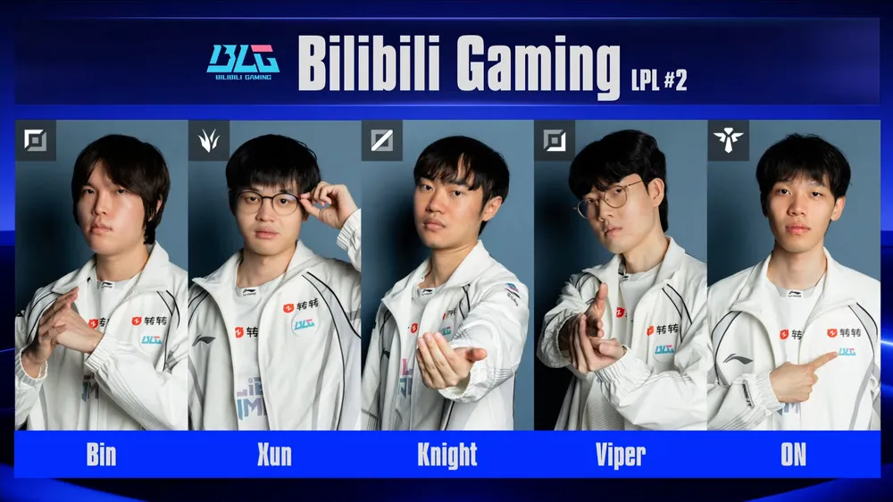

4강에서 T1을 3대1로 꺾고
BLG가 젠지와의 결승전으로 향합니다.
'가장 높은 산, 그리고 가장 긴 강. LPL의 영원한 숙적'
T1의 월즈 LPL 상대 다전제 전승이라는 전설적인 기록은
오늘로 끝납니다.
T1 고생했습니다.

4강에서 T1을 3대1로 꺾고
BLG가 젠지와의 결승전으로 향합니다.
'가장 높은 산, 그리고 가장 긴 강. LPL의 영원한 숙적'
T1의 월즈 LPL 상대 다전제 전승이라는 전설적인 기록은
오늘로 끝납니다.
T1 고생했습니다.
ㅇㅇ 솔직히 바텀차이도 났음
근데 신기하게 진짜 전세계에 페케듀오 막을 사람이 없을정도로 이번해 내내 존나잘했는데
오늘 딱 바온한테 닦임
페이즈의 긴장이 한몫했다봄 ㅋㅋㅋㅋㅋㅋ 세계제일 대회 4강 자기가 1옵?? 씨발 나같아도 긴장은 존나될듯
걍 밴픽에서 지고 드감
근데 제일 최상옵인 봇듀오가 바이퍼 온한태 판정패 당하던데.... 답없다봄